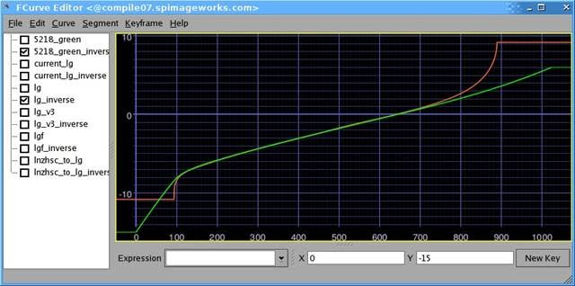
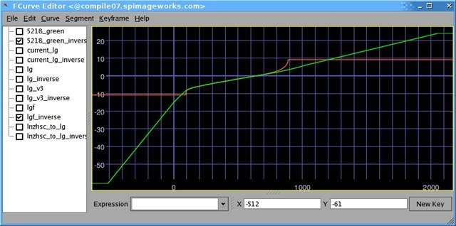
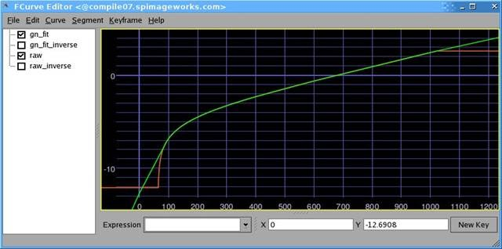
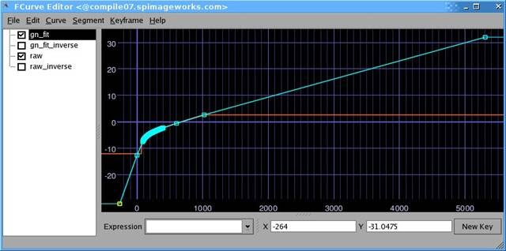
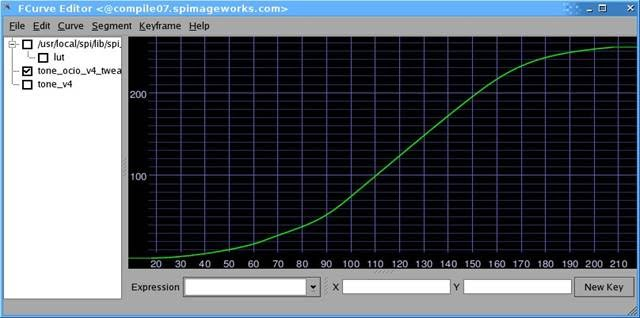

spi-vfx¶This is a real OCIO color profile in use at Sony Pictures Imageworks, and is suitable for use on visual effects (VFX) work. The concepts utilized in this profile have been successfully validated on a variety of Imageworks visual effects films, including Spider-Man, Alice In Wonderland, G-Force, and Green Lantern. Conversion from film to/from scene-linear is a simple, trivially invertible 1D transform. The display transforms are complex, 3D film-print emulations. In production, this profile is typically used before final color details are worked out. Although it sounds temporary, most of a film can be made off this configuration. Final color decisions for a film are often made long after significant work has been done. In some cases shots from a film can be finaled before the color details, such as which Digital Intermediate (DI) house will be used, are decided. Entire projects have been completed using this profile without modification. This profile embodies two philosophies of color management familiar to those in production: “Keep It Simple”, and, “Don’t Be Evil”. The following steps outline a simplified visual effects color workflow:
It is absolutely critical to guarantee that process - end to end - is colorimetrically a no-op. Under no circumstances are any unintended modifications to the original image allowed. Thus, this profile uses very simple (1D) conversions for all input and output color space conversions. All of the complexity (the 3D LUT film emulation lifting) is handled at display time, and is never baked (or unbaked) into the imagery. For visualization, this profile includes a generic Kodak Vision print emulation suitable for display on a reference sRGB monitor or a P3 Digital Cinema projector. Caveot 1: Of course, we realize that there are many other color workflows that may be equally good (or better) than the one presented here. Please, if you have a successful alternative workflows share the details! Caveot 2: We are not distributing the code that generates the luts from their underlying curve representations. While we hope to publish this eventually, at the current time this process relies on internal tools and we don’t have the spare development cycles to port this code to something suitable for distribution. Invertibility¶Elements often need to be transferred back and forth many times between different colorspaces. Since it’s impossible to know in advance how many times an image may be transferred between colorspaces it is essential for the majority of transformations to be lossless invertible transformations. By the end of the color pipeline even a 1 value difference in a 10bit transformation can become a significant issue. Invertible transformations can be taken from the source space, to linear and back with no change to the data. A higher value is placed on transformations being predictable and invertible than absolutely correct. All 1-d luts allow for forward and inverse transformations with no loss. Unless specified all channels are equally affected. The luts are 1 bit wider than stated, so lg8 actually defines 9 bits worth of entries. This allows the rounding in the inverse direction to be applied unambiguously (lossless). Non-invertible transforms contain 3d lookups. 3D transformations can not be inverted due to gamut mapping issues. Non-invertible transformations are only used for final output media (such as QuickTimes) and for display purposes. Film Emulation Inversion¶Inverse film emulation luts aren’t supported in a default configuration. Imageworks does not use a film emulation inversion lut for texture or matte paintings. In its place a film emulation preview lut, commonly as an ICC profile, is used. Although most film emulation luts are similar they do differ significantly. The DI facility creating final color is often chosen long after significant vfx work has been begun. The film luts the film will be finished on are not made until weeks, or days, before DI begins. So the ‘true’ lut that will be used for the finishing is not available until very late in the production, from a VFX perspective. There are many color gamut mapping issues that arise when inverting film to video lut. Using a film inversion lut at this stage would bake in a look that isn’t quite right and is very difficult to fully un-bake. It is safer to work with images in a non-constrained way and apply a visualization that can be toggled on and off. Scene Linear¶lnf, lnh, ln16 Middle Gray: 0.18 The linear space is a photometrically linear space, representing high-dynamic range (HDR) pixel values in our virtual world. Middle gray is defined to be at 0.18. While the dynamic range of lnf is technically unbounded, pixel values for natural, well exposed imagery will often fall between +/- 8 stops from gray. The scene linear colorspace is used for compositing, rendering, and is also the profile connection space. All colorspace conversions are made in relation how they transform into or out of scene linear. The colors defined in linear are implicitly bounded by film negative sensitivities. The space is based off an OCN film scan where values refer to linear light at the focal plane. 0.18 in linear will correspond to a %18 percent grey card captured on filmplane under the same lighting conditions where diffuse white is 1.0. Values above 1.0 in any channel would indicate a ‘specular’, or light emitting objects. lnf is a full precision (32-bit) floating point colorspace. It is used for rendering and compositing. lnh is a half precision (16-bit) floating point colorspace. It is used for rendering and compositing. ln16 is a 16 bit integer representation of the [0,1] range of lnf. This is no longer used but is kept if a legacy image needs to be loaded, or if linear images need to be loaded into an application that does not support float. Note that storing a float lnf image using an integer ln16 representation is destructive, and throws away data. Film Log¶lg8, lg10, lg16, lgf Middle Gray: 445 (of 1023) The log to linear curve is based on an analysis of several commonly used Kodak acquisition stocks. It was found that Kodak 5218 is right about in the middle in terms of tone response given the input imagery we receive. The curve incorporates some toe compensation. The curve gamma closely matches 5218. The transformation does not represent any single stock. The Imageworks log conversions are not channel specific, all color channels are transformed uniformly. Compositing productivity gains have been found using the toe compensations when compared to using a straight line log to linear curve. Shoulder compensation - while technically correct - detracted from compositing quality, often creating situations where grain film noise would result in larger than desired changes in linear light. lg8, lg10, and lg16 are similar. They are all the same log to linear transformation but are explicitly defined to be lossless at the specified bit depths. The luts use nearest neighbor interpolation to search for an exact match. Significant performance gains were found when using the proper bitdepth lut. While using the lg16 conversion on an 8 bit image will yield the same result, it is measurably slower than using the 8-bit conversion (assuming 8-bits is all that is needed). This performance gap remains even on current graphics hardware.

lg10 to linear light. The green curve represents the lg to ln conversion. The red curve show the green channel of a Kodak 5218 exposure test. The x-axis is in 10bit input lg the output is in lg base2 linear light units. 0.0 Represents diffuse white. lg spaces specify 21 of stops of dynamic range. 0 in lg10 space is 15 stops below diffuse white. 445 correspond to 18% grey and is ~2.47 below diffuse white. 1023 in lg10 space is 6 stops above diffuse white. lgf is identical on the range from 0-1 to the standard lg luts. It specifies an additional range below 0.0 and above 1.0. In 10 bit the spaces is defined from -512 to 2048. Lg color timing number from either on set color correction devices or from a DI house to be applied in a way that can be fully inverted out without loss. Lgf specifies 18 stops above the lg10 max and 36 stops below the log10 min with a total dynamic range of 85 stops. The space is designed to be bigger than needed.

lgf to linear light. The green curve represents the lg to ln conversion. The red curve show the green channel of a Kodak 5218 exposure test. The x axis is in 10bit input lg the output is in log(base2) linear light units. 0 Represents diffuse white Panalog (Genesis)¶gn8, gn10, gn16, gnf GN is the Imageworks Panalog space. It follows the Panalog specification and additionally extrapolates so all of the values from 0 to 1023 are defined. This was necessary due to compression artifacts that could create values below the Panalog specifications. gn8,10,16 are defined with diffuse white at 681, Max white is approximately 2.6 stops above diffuse white and black is approximately 12.6 stops below diffuse white. The dynamic range is less than that of lg.

gn10 to linear light. the x axis is in 10bit Panalog values. The Y axis is in linear light. The green curve is the gn curve. the red curve is the Panalog data. gnf is similar in purpose and function to lgf. It is identical on the range from 0-1 to the regular gn and specifies an additional range below 0.0 and above 1.0. In 10 bit numbers gnf is defined from -255 to 3125. This allows for color timing number from either on set color correction devices or from a DI house to be applied in a way that can be fully inverted. Additionally it allows for lg10 based image data to be fully represented without clipping. gnf specifies 14.5 stops above the gn10 max and 18 of stops below the gn10 min. The entire range of gnf is 47 stops.

gnf to linear light. the x axis is in 10bit Panalog values. The Y axis is in linear light. The green curve is the gn curve. the red curve is the Panalog data. Only a subset of the function is used to define the gnf solorspace Reference Art¶vd8, vd16, vdf, hd10 The vd spaces are mappings of linear image data into display space. The main part of the transformation is defined as a single curve that is conceptually two parts. The first is a ln to lg conversion. The second is lg to sRGB conversion. This is based off the neutral channel response of the sRGB film emulation lut used in the profile. The dynamic range of the vd colorspace is limited. It is undesirable to map the vd max to the linear max. Such a conversion results in linear values are almost never what an artist intended. The rule of thumb is that, at the high end, single value deltas in an 8 bit image should never create over a half stop of additional linear light. The vd conversion curve is limited to prevent this case.

The curve used to map from Lg8 to vd 8. The x-axis is in lg8 units, the y-axis is in vd8 units. The dynamic range of the vd is limited to around 2.5 stops above diffuse white. This has two positive attributes. It allows vd to be used to directly on matte paintings. It also allows all of vd to be represented in a gn10 image. The last part of the transformation is a matrix transformation that moves the whitepoint of film to look correct when displayed with a d65 whitepoint. The main use of this colorspace is to import RGB images with an unknown colorspace. This colorspace no longer gets much use alone; However it is an integral part of many conversions. It is also part of the matte painting and diffuse texture pipelines. vdf works differently than the other floating spaces. It still only defines the color transformation from 0-1. This colorspace is used when we receive video space encoded exr’s. HD10 is a vd based space that is used for importing and exporting REC709 range broadcast material. This works very well for broadcast camera native material and poorly for material with a film emulation lut baked in. This transformation works well exporting film based material to tape, even though it lacks a film emulation lut. It does not give an accurate color rendering but created a pleasing image that makes clients happy. Structurally the conversion is a matrix operation that scales the data then adds an offset to limit the range from 64-940. From there the standard vd transformation is applied. Texture Painting¶dt8, dt16 DT 8,16 - Diffuse texture colorspaces. These colorspaces are used for the conversion of textures painted in video space into a range limited linear space for use in rendering. The Color space is based on the vd transformation but limits the conversion into linear space so that no values above diffuse white can be created. This ensures that textures do not add light to a render. This is achieved by using a matrix transformation to limit the mapping of vd to the linear value of diffuse white. Data¶nc8, nc10, nc16, ncf Non-Color (NC) spaces are used to hold any data that needs to be processed though the color pipeline unaltered. These are data spaces and can hold anything such as point clouds, normals, untagged reference art, etc. These data spaces do not get transformations applied at any point. Display Transforms¶srgb8, p3dci8, xyz16 srgb8 bakes in the film3d emulation lut. This table can be used for either QuickTime generation or output to the sRGB display. The transformation is a 3d film emulation table with gray balance compensation, so a value of 445,445,445 in lg10 space os modified to become equal RGB values in sRGB. Additionally the lut is scaled so that at least one of the color channels on maximum white uses the display max. The transformation takes place in three parts. First the linear data is converted to the show log space. Then a film emulation table is applied. Then the grey balance and white scaling compensation are applied. This table is designed to be evaluated in a dimly lit office environment on a sRGB display. p3dci8 is an implementation of film emulation table that has an output of DCI P3. This is only ever used for driving DLPs for display. The transformation has two parts. First the linear image data is converted to lg10 based image data then the DCI P3 film emulation lut is applied. No additional compensations are made. xyz16 is designed for the creation of a Digital Cinema Distribution Master (DCDM). The color matches that of the P3 output (dlpqt8), but has an additional output transformation to convert to X’Y’Z’. The transformation takes the linear image data and converts it to lg, then applies the filmlook. The data is then in DCI P3 colorspace. That data is converted to display linear P3, using an inverse gamma curve. A matrix conversion is then used to transform from DCI P3’ into XYZ’. The final step is to reapply the gamma 2.6 to result in XYZ16 values. In this profile each display has three identical looks defined. The names are kept consistent between devices to minimize confusion. OCIO uses a specific tag to associate colorspaces with displays. The tags are nothing more than links to already defined colorspaces. Film is the image displayed though a film emulation lut. This visualization is display compensated and should visually match between a sRGB display and a P3 projector. The goal is to match how the film will look in a DI. The luts in use for this profile roughly match the Sony ColorWorks environment. Raw visualization shows the image data on the screen with no display compensation. This is used for image debugging purposes, for instance to see if potential image discontinuities are in the source data or the visualization. Log visualization displays the image as if it were converted to the show specific log. This is transformation also has no display compensation. The common use for this us to see how well elements fit into the comp without the film emulation lut disguising any flaws. Old school compositors love it for grain matching. sRGB Film : srgb8 sRGB Raw : nc10 sRGB Log : lg10 DCIP3 Raw : nc10 DCIP3 Log : lg10 DCIP3 Film : dlpqt8 Display Calibration¶sRGB is the supported desktop display specification, calibrated to the sRGB standard and viewed in a dim office environment. As Imageworks switched from crt based display devices to LCD based devices a number of possible colorspaces were explored. It was a long decision but sRGB was chosen for a few reasons. An important one was that almost every display manufacturer can implement sRGB, reasonable well. This becomes a boon when we work needs to be done outside of our main facilities. Even a consumer display with calibration can come close to matching the sRGB standard. Since so many monitor manufacturers can hit sRGB calibration we are not tied to purchasing from a specific vendor. It becomes unnecessary to specify a specific display to with productions or external vendors. It also reduces the amount of studio specific color requirements that need to be communicated when working with other facilities. 80 cd/m^2, D65 white point, srgb gamma function (approx 2.4) P3 was deemed especially unusable on the desktop. The full specification requires a white point of 48 cd/m^2. To adapt P3 for desktop use (in dim ambient environments), the whitepoint luminance needed to be raised. The specified 2.6 gamma is very challenging to the current display technology on very dark colors. This meant that we would have a special Imageworks video P3. A custom colorspace wouldn’t make compositing better and would require a conversation, or conversion, every time video was sent out of house. DCIP3 is a projector calibrated to DCI P3 mastering specification in a theatrical mastering environment. We use a mix of display technologies, SXRD and DLP, depending on application. Gamma 2.6. Traditional DCI calibration. |